Damping Identification and Design
We develop methods to identify spatially distributed damping using full-field measurements such as Digital Image Correlation (DIC) together with the Virtual Fields Method (VFM). By reconstructing where and how energy is dissipated in a structure, we aim to move from damping measurement to the informed design of tailored damping treatments and structures.
More information →